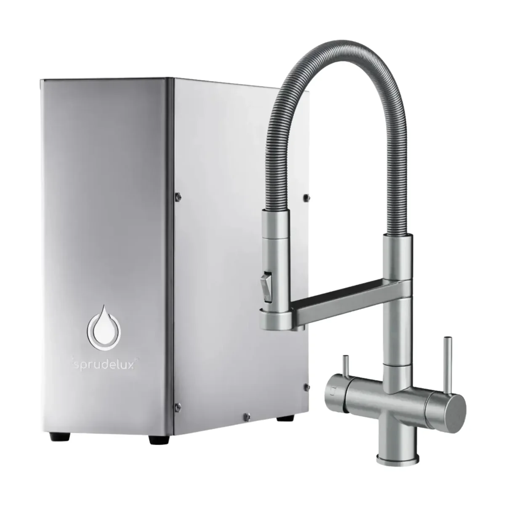
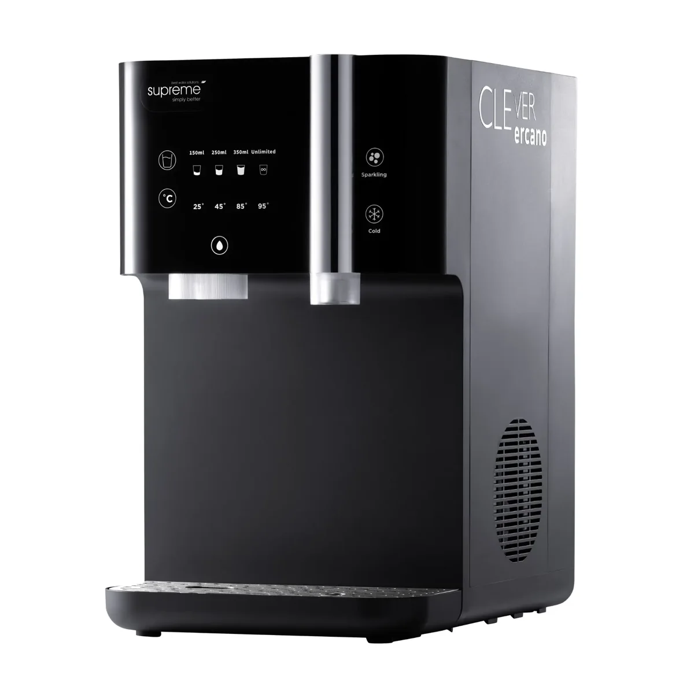
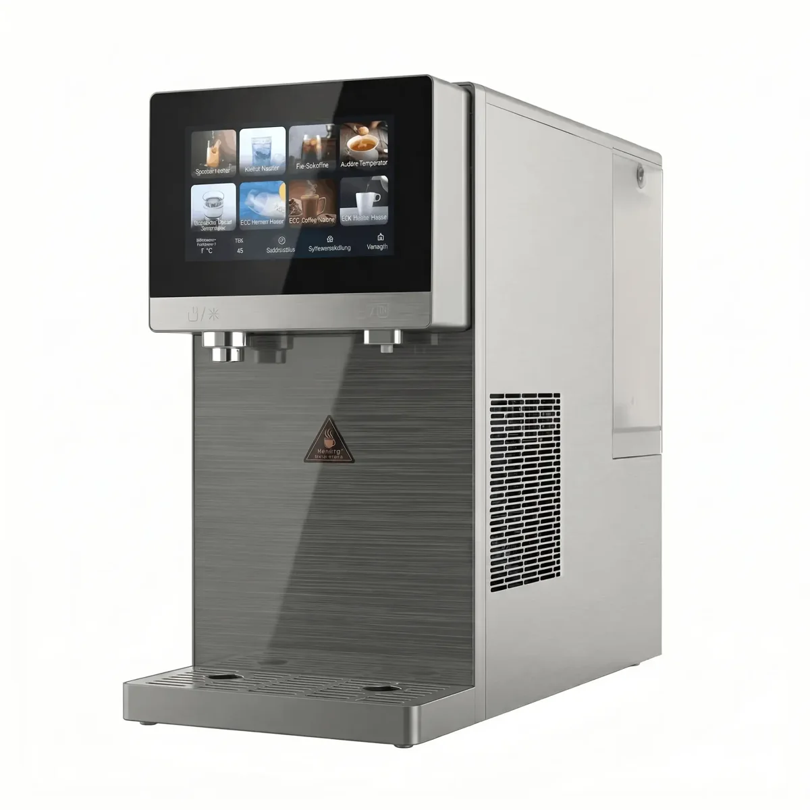
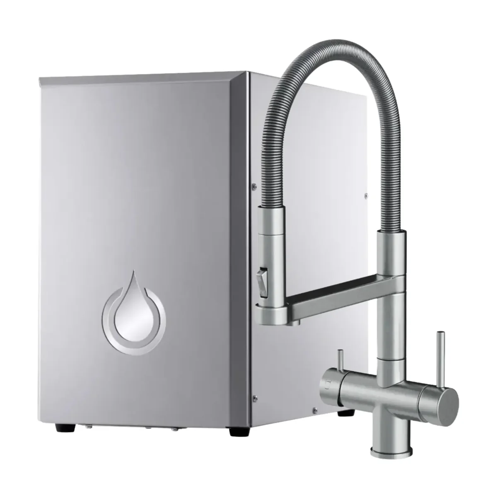

Wasserfiltration
SPRUDELUX
SPRUDELUX bietet Systeme und Produkte für Trinkwasserfiltration, Umkehrosmose und Wasseraufbereitung. Die Datenbank führt die offiziell veröffentlichten Modelle und technischen Eigenschaften.
Produkte in der Datenbank

SPRUDELUX
SPRUDELUX® INOX SILENT - Premium Sprudelanlage | hoher CO2 Gehalt | geräuscharm | Edelstahl
1.237,90 €

SPRUDELUX
SPRUDELUX JUMAN SUPREME – Premium Umkehrosmoseanlage mit Sprudel & Heißwasserfunktion | Quick Change Filter & UVC-LED Technologie | mit Festwasseranschluss
849,95 €

SPRUDELUX
SPRUDELUX Pro Touch - Premium Umkehrosmoseanlage mit Sprudel & Heißwasserfunktion | Quick Change Filter & UVC-LED Technologie | Tank bzw. Festwasseranschluss
1.359,16 €

SPRUDELUX
SPRUDELUX® NUOVO - Premium Umkehrosmoseanlage | hoher CO2 Gehalt | geräuscharm | Edelstahl
1.990,43 €

SPRUDELUX
SPRUDELUX® ULTRA FLAT - Premium Sprudelanlage | nur 10,5 cm flach | hoher CO2 Gehalt | geräuscharm | Edelstahl
1.316,24 €